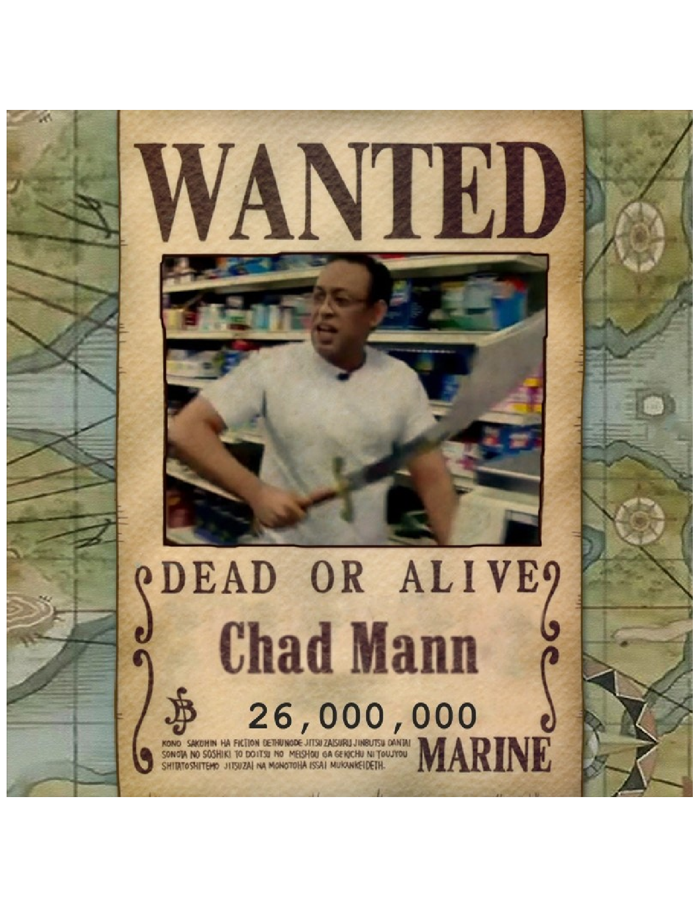
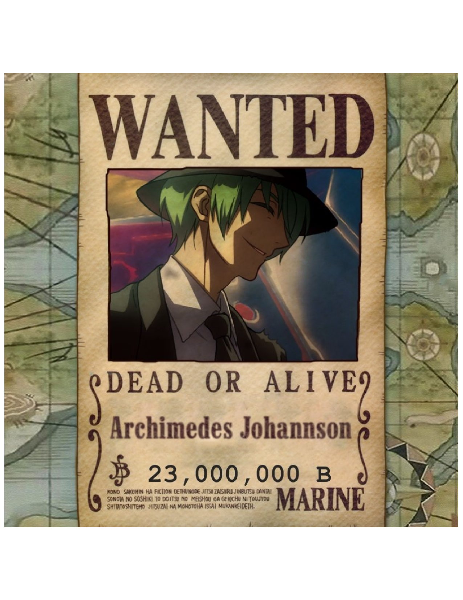

| New Game Pirates | |
|---|---|
| Statistics | |
| English Name: | New Game Pirates |
| Debut: | Session 1 |
| Captain: |
Suresh Wanty |
| Main Ship: | Whispered Vesper (Renamed to Checkpoint) |
| Total Bounty: |
$73,000,000 Grand Total: $115,000,000 |
New Game Pirates
The New Game Pirates are a group of pirates that originated from the West Blue, but have members from various diffrent areas. They are the Main Protagonists of One Piece DnD, and were led by Keek Frip origionally, but after his death they were led by Chad. After the retirment of Chad, they were led by Suresh.
The Name "New Game" comes from the former captain, Keep Frip, who came up with it hours before he died. The Crew sailed upon the Whispered Vesper until it was renamed to the Checkpoint, which they purchased for $4,000,000 beli on Cresent Island. The New Game Pirates consist of four members whos combinded bounties equal $73,000,000.
Jolly Roger
The Jolly Roger emblem is a Skull on a black background, with red plus signs in the eyes, on top of a cross made of white light. The Flag was drawn by the former captain, Keek Frip, after the initial one drawn by Archie was rejected.
Archie's Version
Keek Frip's Version
Crew Members
Main Crew
The first five memebers of the crew were all directly recruited by Keek Frip. Their members are quite diverse, with the origional crew being made of a Dwarf, a Fishman, a Long-Leg Tribesman, and two humans. After the death of the Dwarf, another short person joined.
After the Retirement of Chad, they were reduced to a team of four.
| New Game Pirates | ||||
|---|---|---|---|---|
| Members | ||||

|
||||
| Suresh Wanty | Archimedes | Sanjo | ||
| Umioga | ||||
| Companions | ||||
| Pinky | Brain | |||
| Ships | ||||
| Checkpoint | ||||
| Allies | ||||
| Vibing Pirates | ||||
Captaincy
After the death of Keek Frip at the hands of an ambush of Factory guards during the Scraptrap Arc, the crew held a vote to decide who should be the next captain. Chad and Suresh put themselves forward as possibilities at dinner after the death of Keek Frip. Each member of the crew was given a single vote, and Chad ended up winning the vote.
- Chad Mann: 3
- Suresh Wanty: 1
- Archimedes Johannson: 1
After the retirement of Chad, Suresh was promotted to Captain of the crew.
Sub-Groups
The Origional Crew
The Origional Crew consists of Suresh, Archimedes and Sanjo.
Terrirories
The New Game Pirates do not have any Terrirories
Crew Strength
Despite having a small number of members, the New Game pirates are a relativly strong group of rookie pirates. The crew has been able to use teamwork to defeat opponents above their league with ease.
Fighting Abilities
Each member of the crew fulfils a critical role on the ship, in addition to being powerful fighters. The current Captain as a skilled swordman, the Cook is a skilled martial artist, the Shipwright is a skilled Hammerman, and the Navigator is a skilled marksman.
Devil Fruit
Archie Possesses the Nagi Nagi no Mi, and Sanjo possesses the Tori Tori no Mi: Model Gargoyle. Suresh possesses a sword that has 'eaten' the Ushi Ushi no Mi, Model: Sheep.
Haki
Although they hadn't realized it, Suresh and Sanjo possesses basic Armament Haki.
Alliances
The crew formed a temporary alliance with the Vibing pirates to escape undermountain.
Weaknesses
The crews main weaknesses are their small numbers, which allow them to be easily overwhelmed by large groups. The crews second main weakness is their recklessness, which leads them to split into smaller groups, and get overwhelmed.
Professions and Capabilities
| Name | Profession | Capabilities | Epithet |
|---|---|---|---|
| Captain Doctor |
• Martial Arts • Medical Knowledge • Leadership |
Waterbender | |
| Suresh Wanty | Shipwright Captain |
• Shipbuilding • Hammermanship |
Man Eater |
| Shipwright Captain |
• Swordsmanship • Shipbuilding |
Merchant | |
| Archimedes Johannson | Navigator | • Stealth • Marksmanship • Navigation |
Sharpshooter |
| Sanjo | Cook | • Cooking • Martial Arts • Helmsmanship |
Tresspasser |
| Umioga | Musician | • Music • Marksmanship |
Rock Star |
Bounties
Pre-Series
Chad Mann: First Bounty: $8,000,000Sanjo: First Bounty: $5,000,000
Total: $13,000,000
Scraptrap Arc
 Chad Mann: Bounty: $26,000,000
Archimedes Johannson: Bounty: $23,000,000
Suresh Wanty: Bounty: $20,000,000
Sanjo: Bounty: $18,000,000
Umioga Sakasu: Bounty: $12,000,000
Total: $99,000,000
Alabasta
Archimedes Johannson: Bounty: $23,000,000
Suresh Wanty: Bounty: $20,000,000
Sanjo: Bounty: $18,000,000
Umioga Sakasu: Bounty: $12,000,000
Total: $73,000,000
Relationships Amongst the Crew
Dreams
Keek Frip: Unknown
Suresh Wanty: Unknown (Possibly to steal all hats)
Chad Mann: Unknown
Archimedes Johannson: To see every island, and avenge his first captain
Sanjo: Cook
Umioga: Unknown
Locations Visited
Cresent Moon Island
Coliseum Island
Uncharted Island (Undermountain)
Scraptrap Island
Reverse Mountain
Parkland Island
Perimus Island
Alabasta Island
Misc
Animal Resemblance
Specific Numbers
Specific Colors
Specific Smells
- Keek: Smells like Salt
- Suresh: Smells like Fish
- Chad: Smells like Oil
- Archie: Smells like Gunpowder
- Sanjo: Smells like Fire
- Umioga: Smells like Alcohol
Favorite Type of Island and Season
- Keek: Spring on an Autumn Island
- Suresh:
- Chad:
- Archie: Autumn on an Autumn Island
- Sanjo:
- Umioga: Autumn on an Autumn Island
Favorite Food
- Keek: Salmon
- Suresh: Hemborgor
- Chad:
- Archie: Coffee with Cheesecake
- Sanjo:
- Umioga: Omlettes with Mixed Vegtables
As a Family
Nationalities
- Keek: Brazilian/American Boxing
- Suresh: Argentinian/American Overalls
- Chad: Cambodian/Japanese Samurai
- Archie: American/Italian Suit
- Sanjo:
- Umioga: Spanish/Indian Ringleader
Inner Brain
- Keek:
- Suresh: Ocean, Freedom, Flesh,
- Chad: Sword, Find, Hunt, Sword, Freedom
- Archie: Calm, Plan, Map, Calm, Shoot
- Sanjo:
- Umioga: Music, Freedom, Gun, Music, Insperation
Suited Flower
Blood Type
Bathing
Sea of Origin
- Keek: West Blue
- Suresh: West Blue
- Chad: Grand Line
- Archie: South Blue
- Sanjo: Grand Line
- Umioga: West Blue
Least Favorite Food
Typical Hours of Sleep
Suitable Career Choices
- Keek: Competative Martial Artist
- Suresh: Repairman
- Chad:
- Archie: Agent
- Sanjo:
- Umioga: Lead Guitarist
Cooking Specialties
- Keek: Fried Fish
- Suresh: Vegan Salads/Fish
- Chad: Sashimi
- Archie: Coffee's and Tea's
- Sanjo: Burgers
- Umioga: Stir Fry